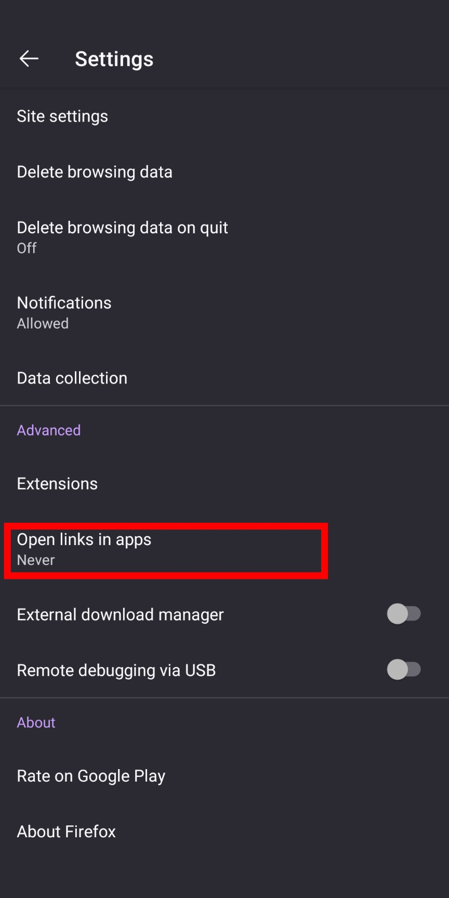

Q1. (Android) If you click the pocket button and see a dialog box asking you to open it in another app, you need to change the Firefox settings. Please change the settings as follows:
1. At the right side of your address bar, tap the three dots application menu.
2. In the dropdown menu, select Settings.

3. At the bottom of the Advanced section, look for the option to Open links in apps. Select the never option.